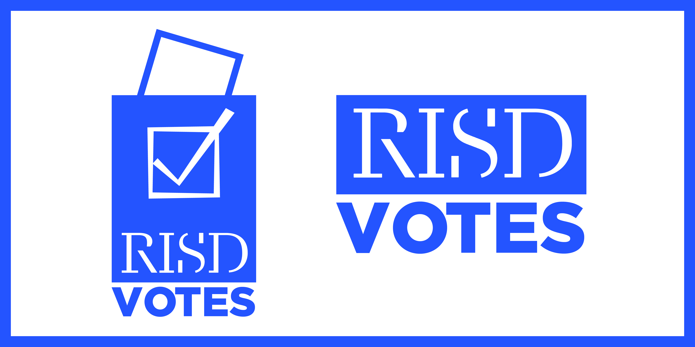
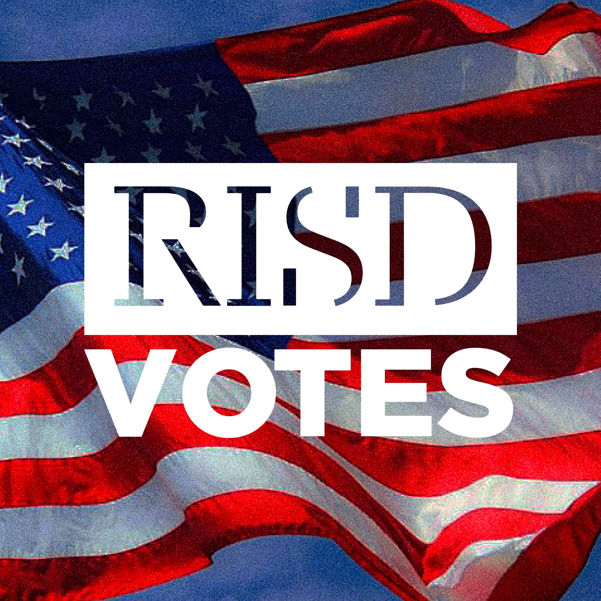
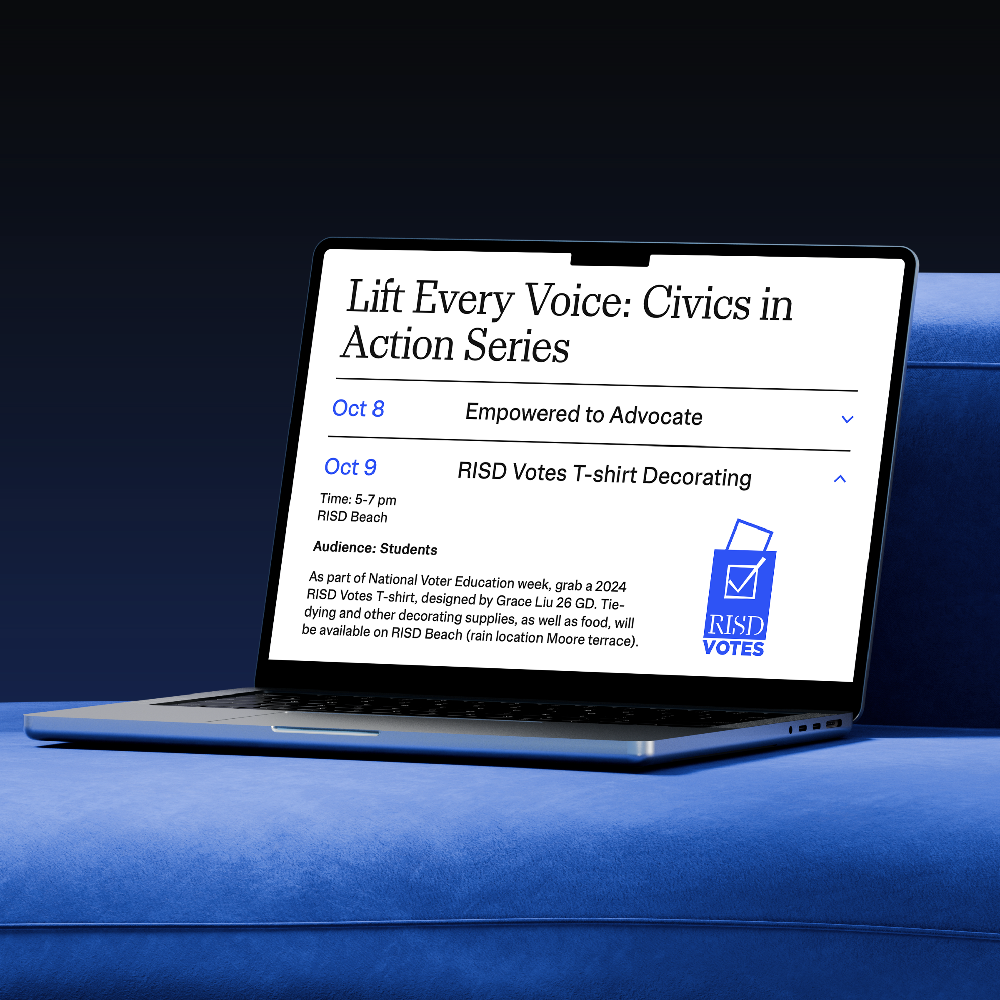

RISD VOTES
awareness for voting around campus
identity design
client RISD Student Life
For National Voter Education Week at the Rhode Island School of Design (RISD), the Division of Student Life organized a t-shirt tie-dye and decorating event on campus to promote voting and student participation in the democratic process. The RISD Votes program is a nonpartisan, institution-wide effort to educate and facilitate voter registration and voting in local, state and national elections.




The identity for the 2024 RISD Votes program was designed to complement the school's branding and the RISD Serif typeface designed by alum Ryan Bugden with Gretel. Students were invited to customize, tie-dye, and take home their RISD Votes t-shirts, engaging community awareness around voter registration and upcoming elections.